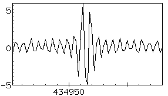
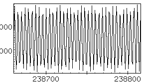

This shows a typical centre burst from an interferogram with a fairly rich line spectrum.

Sometimes it is not so easy to decide exactly which point to take as the centre In this case, the best thing to do is to determine the phase and iterate through various values for the centre point to see which gives the flattest phase.

In the case of a spectrum with few lines, it might be nearly impossible to determine exactly which fringe is the central fringe. If you can determine it fairly closely, you may be able to determine it from the phase plot as before. However if this is not possible, the only thing to do is to correct the phase of each line individually using cmplx linecorr.